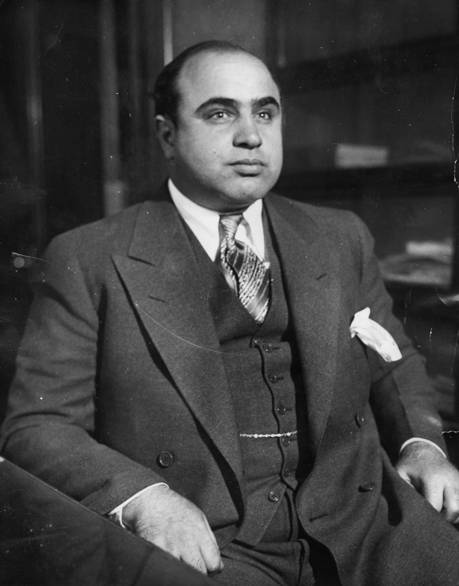

Warren Buffett
Warren Buffett ist einer der bekanntesten Investoren der Welt und hat öffentlich auf die Ungleichheit im Steuersystem hingewiesen. Er hat erklärt, dass er weniger Steuern zahlt als seine Angestellten und hat sich für eine gerechtere Besteuerung von Vermögen und Kapitaleinkünften ausgesprochen.

Tim Cook
Apple und sein CEO Tim Cook waren in den Medien aufgrund der Steuervermeidungsstrategien des Unternehmens. Apple nutzte in der Vergangenheit legale Steuerstrategien und Standorte wie Irland, um seine Steuerlast zu minimieren. Dies führte zu Kontroversen und Diskussionen über internationale Steuerpraktiken von multinationalen Unternehmen.
Lionel Messi
Der argentinische Fußballspieler Lionel Messi geriet in die Schlagzeilen, als er wegen Steuerhinterziehung angeklagt wurde. Er wurde beschuldigt, über Scheinfirmen Einnahmen aus Bildrechten nicht korrekt versteuert zu haben. Messi wurde schließlich zu einer Geldstrafe und einer Haftstrafe auf Bewährung verurteilt.
Richard Murphy
Richard Murphy ist ein britischer Wirtschaftsprüfer und Buchautor, der sich intensiv mit Steuervermeidung und Steueroasen befasst hat. Er hat zur Entwicklung von Konzepten wie "Country-by-Country Reporting" beigetragen und sich für eine gerechtere Besteuerung und Transparenz eingesetzt.
Joseph Stiglitz
Joseph Stiglitz ist ein bekannter US-amerikanischer Wirtschaftswissenschaftler und Nobelpreisträger, der sich intensiv mit wirtschaftlicher Ungleichheit und Steuergerechtigkeit beschäftigt hat. Er hat sich für eine Reform des globalen Steuersystems ausgesprochen und argumentiert, dass die Reichen und Unternehmen angemessen besteuert werden sollten, um soziale Ungleichheit zu verringern und öffentliche Dienstleistungen zu finanzieren.
Bernie Madoff
Bernie Madoff war ein amerikanischer Finanzbetrüger, der für einen der größten Ponzi-Betrügereien der Geschichte verantwortlich war. Er betrieb über viele Jahre hinweg einen Schneeballsystem-Betrug und lockte Investoren mit hohen Renditen an. Madoff wurde 2009 verhaftet und zu einer langjährigen Haftstrafe verurteilt. Sein Fall verdeutlicht die Bedeutung der Bekämpfung von Finanzbetrug und illegalen Aktivitäten im Zusammenhang mit Steuern.
Al Capone
Al Capone war ein berühmter US-amerikanischer Gangster und Mobster während der Prohibitionszeit in den 1920er Jahren. Obwohl er für viele illegale Aktivitäten bekannt war, wurde er letztendlich wegen Steuerhinterziehung verurteilt. Capone wurde wegen nicht gezahlter Steuern auf seine illegalen Einkünfte angeklagt und zu einer Haftstrafe verurteilt. Sein Fall verdeutlicht, wie Steuerbehörden auch bei berüchtigten Kriminellen Steuervergehen verfolgen.
